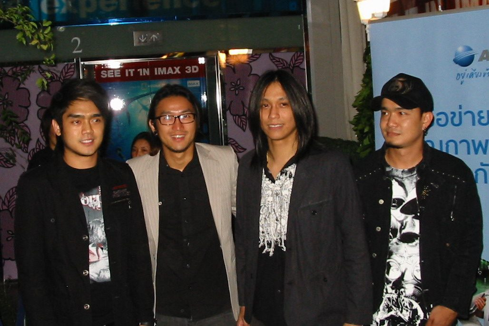
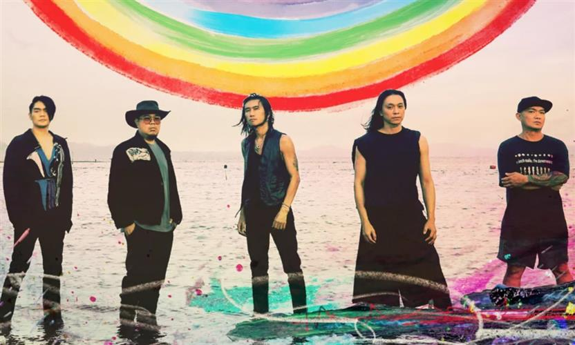
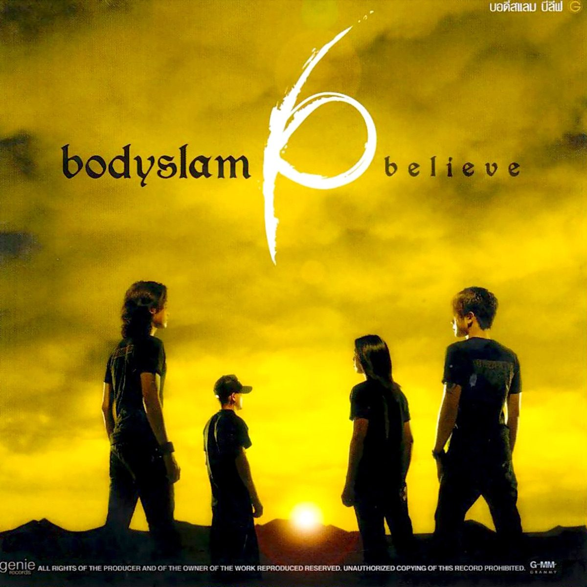
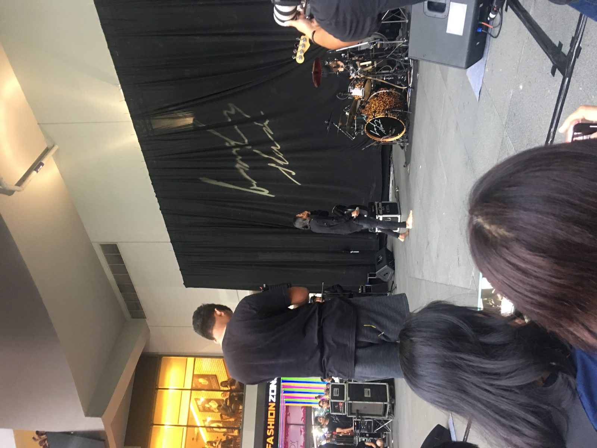
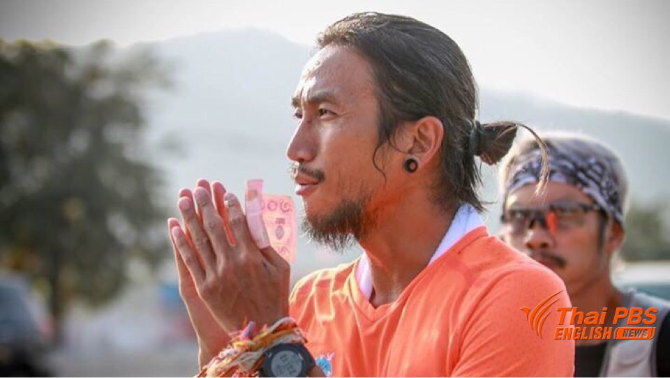
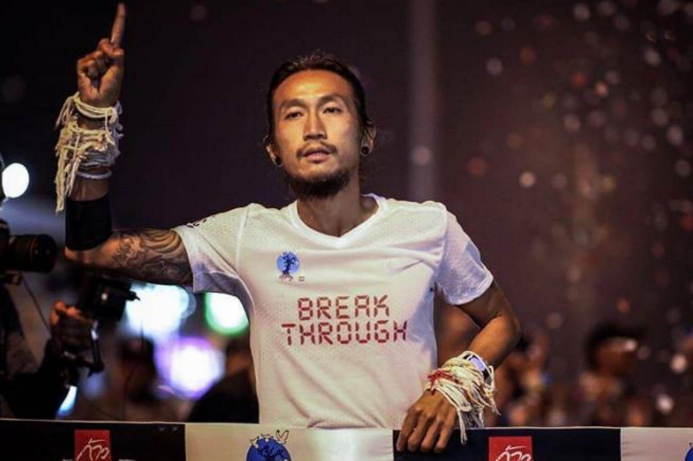

六个还在读书的学生，把队名从方言里的「小孩子」改成职业摔角术语 Bodyslam（抱摔），然后在 2005 年用一首关于「送到半路就放手」的歌，唱遍了泰国的街头巷尾。[5] 他们是泰国商业化最成功的摇滚乐队之一；主唱 Toon 后来干了一件和唱歌一样出名的事——用两只脚，从泰国最南端跑到最北端，为公立医院募了十几亿泰铢。[12][13]


| 成员 | 分工 | 在队时间 |
|---|---|---|
| อาทิวราห์ คงมาลัย Artiwara "Toon" Kongmalai | 主唱 / 吉他 | 1996–今（创团成员） |
| ธนดล ช้างเสวก Thanadol "Pid" Changsawek | 贝斯 / 和声 | 1996–今（创团成员） |
| สุชัฒติ จั่นอี๊ด Suchatti "Chad" Janed | 鼓 | 2003–今注1 |
| ธนชัย ตันตระกูล Thanachai "Yod" Tantrakul | 吉他 | 2005–今 |
| โอม เปล่งขำ Ohm Plengkhum | 键盘 / 和声 | 2007 或 2010–今注2 |
| รัฐพล พรรณเชษฐ์ Ratthapol "Pao" Pannachet | 吉他 / 和声 | 2002–2005（离队） |
注1：Chad 的加入年份，百度百科记 2003 年（「签约 GMM 同时吸收一名新成员变为 4 人」）[5]，RateYourMusic 记 2003 年起 [9]，tracklist.live 记 2005 年 [15]——本页取 2003（两源一致，且与更名后四人阵容的时间线吻合）。
注2：键盘手 Ohm 的加入年份，RateYourMusic 记 2007 年 [9]，tracklist.live 记 2010 年 [15]，暂无更权威来源裁决，如实并存。
1996–2002 的 La-On 时期为六人编制，2002 年更名时精简为三人 [5][16]；此后经 2003（Chad）、2005（Yod）两次增员，形成沿用至今的五人阵容（Pao 于 2005 年离队）[9]。
〈ขอบฟ้า〉直译是「天空的边缘」，也就是地平线——一个你永远走不到的地方。整首歌就架在这个意象上：两个人曾经一起梦想着走到天边，但走到半路，她遇到了「更好的人」。副歌的第一句把这件事一次说完——「天边终究要变成他，带你去往我们梦想过的一切」。[4][8]
这不是一首控诉的歌。叙述者从头到尾没有怨：他说「你要走，我拦不住」「无论多痛我都会忍」，然后是整首歌最重的一句——「送你只能送到半路」（มาส่งเธอได้แค่ครึ่งทาง）。放手被写成了一个地理动作：他能陪她走的路，到半路为止；剩下的路，是她的，也是别人的。结尾他把全部让渡归结成一个字，反复念了两次：ยอม——「我愿意」。[4][8]
从网易云逐句时间轴可以看清这首歌的呼吸方式：开头只给两句——「只能转头望向天边尽头」「可惜我们终究到不了地平线」——随后是近二十秒没有歌词的乐器段落，乐队才正式进来。整首歌以「望」开场，先给画面、再给叙事，副歌里那个从未出现的「天边」才落成具体的告别。[4]
它出现在乐队最需要这样一首歌的时刻。《Believe》是 Bodyslam 签入 GMM 之后的第三张录音室专辑，发行后乐队一跃成为泰国头牌摇滚乐队、开启了大半个 2005 年的全国巡演[16]；一张需要走向全国的专辑，收一首旋律最顺、歌词最不设门槛的告别曲做支柱，是再自然不过的编法。同时期的〈ความรักทำให้คนตาบอด〉讲「爱让人盲目」，情绪更拧巴；〈ขอบฟ้า〉则把痛苦收进克制里——先认输，再祝她幸福。这种「体面地心碎」，让它成了卡带与 KTV 时代之后、真正在流媒体时代也留得下来的那一首。
说明：本页未逐项核实录音细节（调性、和声进行、录音室配置等暂无可靠中文/英文来源），以上赏析建立在歌词文本、逐句时间轴与专辑背景之上，未作声音层面的断言。
本期资料短片与〈ขอบฟ้า〉全曲等长（4:16.25，以 Apple Music / 网易云一致标注的时长为准[3][4]），用乐队真实史料画面——2008 年四人合影、主唱肖像、专辑封面、现场照片——把这一站装进一首歌的时间里。配音版正片待解说稿定稿后合成；无声版资料短片成片后在本页上线。




以下事实在不同来源间存在出入，本页如实记录、不强行取舍：
| 事项 | 分歧 |
|---|---|
| 成军年份 | 多数来源记 1996 年（以 La-On 名义成军并夺冠）[5][16]；RateYourMusic / MusicBrainz 以 2002 年更名 Bodyslam 作为「成立」[1][9]。两者实为同一支乐队的前后两个名字，本页以 1996 为成军年。 |
| 鼓手 Chad 加入年份 | 2003 年 [5][9] 或 2005 年 [15]，取 2003（见成员表注1）。 |
| 键盘手 Ohm 加入年份 | 2007 年 [9] 或 2010 年 [15]，无更权威来源，并存（见成员表注2）。 |
| Toon 长跑里程 | 起跑公布目标 2,191 公里 [13]；Khaosod English 记「到达终点 2,215 公里、55 天」[12]。本页取 2,191（目标里程），募款额两源一致（逾 13 亿泰铢）。 |
| 〈ขอบฟ้า〉词曲署名 | 网易云音乐歌词页记「作词：ขจรเดช พรมรักษา, หลังฝน；作曲：พูนศักดิ์ จตุระบุล / อาทิวราห์ คงมาลัย」[4]；Genius 记 Toon、制作人 Poonsak Jaturaboon 与 Big Ass 乐队 Kob 共同创作 [6]。署名细节两说并存。 |
| 《Believe》的奖项 | 中国乐迷论坛转述的专辑介绍称乐队拿下第 4 届 Fat Awards「最受欢迎专辑」、〈ความเชื่อ〉获「年度歌曲」[16]，与 2007 年维基百科存档脚注（引用 Fat Awards 第 4 届结果页）方向一致 [10]，但原始结果页未能取回，此条本页不作细节展开。 |
| 成军时的学校学段 | 维基百科乐队条目称 Suankularb Wittayalai School 为「elementary school（小学）」[17]；但同条目的学校条目与「高中生乐队比赛（Hot Wave Music Awards）」这一事实均表明它是 7–12 年级的中学 [17]——「小学」系乐队条目的表述误差，本页按中学处理。 |
图片来源
[图1] Wikimedia Commons〈Bodyslam (Thai band).jpg〉，摄者 Sry85，CC BY 3.0（2008）：commons.wikimedia.org/wiki/File:Bodyslam_(Thai_band).jpg
[图2] 2024《Sunny Side Up》世界巡演官方宣传照，NAC 可以娱乐提供（经 BigMedia 转载）：bigmedia.com.tw/article/CF4224A4-3E82-407E-9229-CF887242FBAE
[图3] 2017「ก้าวคนละก้าว」全国慈善长跑途中照，Thai PBS English News（经 Coconuts Bangkok 转载）：coconuts.co/bangkok/news/toon-bodyslam-finished-epic-charity-run-yesterday-named-man-year-2017
[图4] Wikimedia Commons〈Bodyslam at Siam Square 2018.jpg〉，摄者 Thanapas.som，CC BY-SA 4.0（2018）：commons.wikimedia.org/wiki/File:Bodyslam_at_Siam_Square_2018.jpg
[图5] 《Believe》专辑封面，取自 Apple Music / iTunes 商店专辑页（GMM Grammy / Genie Records 供图）：music.apple.com/us/album/believe/1792749726
[图6] 2017.12.25 湄塞终点冲线照，Toon 本人 Instagram（经 The Straits Times 转载）：straitstimes.com/asia/se-asia/thai-rock-star-turns-national-hero-after-two-month-run
.jpg){kind=link}